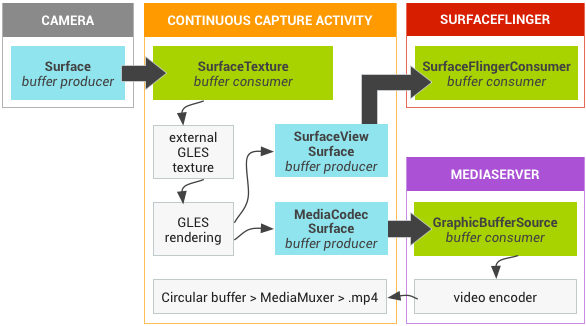
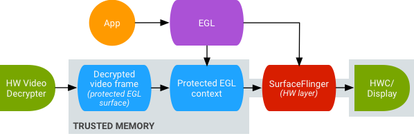

Android图形系统架构（SurfaceTexture）
译自：https://source.android.com/devices/graphics/arch-st
SurfaceTexture
SurfaceTexture 是从 Android 3.0 开始出现的。正如 SurfaceView 是 Surface 和 View 的组合，SurfaceTexture 是Surface和 GLES 纹理（有几个注意事项）的粗略结合。
当您创建的 SurfaceTexture 时，您创建了一个BufferQueue，你的应用程序是其消费者 。当一个新的缓冲区由生产者排入队列时。通过回调（onFrameAvailable()）通知您的应用程序。您的应用程序调用 updateTexImage()，释放先前拥有的缓冲区，从队列中acquire新的缓冲区，并调用一些EGL调用，以使缓冲区可作为外部纹理被 GLES 使用。
外部纹理
外部纹理（GL_TEXTURE_EXTERNAL_OES）和GLES创建的纹理(GL_TEXTURE_2D)不完全一样。渲染器的配置稍有不同，并且有些事情还不能做。最关键的是：你从 BufferQueue 收到的数据可以直接用来渲染纹理多边形。gralloc 支持非常多的格式，所以要确保缓冲器中的数据格式是GLES能认识的。为此，在 SurfaceTexture 创建 BufferQueue 时，它将消费者的使用标志设置为GRALLOC_USAGE_HW_TEXTURE, 以确保任何 gralloc 创建的缓冲区能被 GLES 使用。
因为 SurfaceTexture 与 EGL 上下文进行交互，所以要小心，要从正确的线程调用它的方法（细节在类文档里）。
时间戳和转换
如果你深入类的文档，您将看到两个奇怪的调用。一个检索时间戳，另一个是转换矩阵，每个值都是被前面的 updateTexImage()调用设置的。原来 BufferQueue 向消费者传递不仅仅只是一个缓冲区句柄。每个缓冲区伴随着一个时间戳和转换参数。
提供转换参数是为了效率。在某些情况下，对于消费者来说，源数据可能会在”错误的”方向（orientation）上；但不是在发送数据之前进行旋转，我们可以发送已有方向的数据、以及纠正它的变换矩阵。在数据被使用的时候，变换矩阵可以与其他变换合并，以减少系统开销。
对于某些缓冲区源，时间戳是有用的。例如，假设您把生产者接口连接到相机的输出（ 使用setPreviewTexture()）。如果你想要创建一个视频，需要设置每个帧的出现时间戳；当然你想要的是当帧被捕获时的时间，而不是您的应用程序收到缓冲区的时间。与缓冲区相关的时间戳，由相机代码设置，这样，时间戳能更精准了。
SurfaceTexture 和 Surface
如果仔细查看 API，您将看到应用程序创建一个普通 Surface 的唯一途径是通过采用 SurfaceTexture 作为唯一参数的构造函数。（在 API 11 之前，没有Surface的公开构造函数）。这看起来似乎有点落后，如果你把 SurfaceTexture 作为 Surface 和纹理的组合。
表象之下，SurfaceTexture 被称为 GLConsumer，这更准确地反映了其作为 BufferQueue 的所有者和消费者的角色。当你从 SurfaceTexture 创建一个 Surface 时，你在创建了一个 SurfaceTexture 的 BufferQueue 生产者方的对象。
案例研究：Grafika 的”Continuous Capture”
相机提供的帧流很适合用于录制成一部电影。如果你想要在屏幕上显示，你创建 SurfaceView，并把 Surface 传递给setPreviewDisplay()，让生产者（相机）和消费者（SurfaceFlinger） 做所有的工作。如果你想要录制视频，你用 MediaCodec 的createInputSurface()创建一个Surface，并把它传递给相机，然后你就可以坐下来并放松一下。如果你想要同时显示视频并录制，你需要做更多的工作。
“Continuous Capture” Activity同时显示并录制了从相机来的视频。在本案例中，编码好的视频写入内存中的循环缓冲区，这样任何时间都可以保存到磁盘上。这是很直接的实现方法，你只需了解所有的东西在什么地方。
下面的流程有三个 BufferQueues 参与：一个由应用程序创建，一个由 SurfaceFlinger创建，和一个由媒体服务器创建。
应用程序 使用 SurfaceTexture 来接收从相机来的帧流，并将它们转换为外部 GLES 纹理。
SurfaceFlinger 应用程序声明了一个用于显示帧流的 SurfaceView，
MediaServer 配置MediaCodec 编码器, 将”输入Surface”用于录像。

图 1.Grafika 的 “continuous capture” activity 箭头显示了来自相机的数据的传播。BufferQueues用颜色标示了（青色的是生产者，绿色的是消费者）。
编码好的 H.264 视频会进入到应用程序进程的 RAM 中的循环缓冲区，当”capture”按钮被点击的时候，应用程序使用 MediaMuxer 类将其写到磁盘。
在应用程序中，所有三个 BufferQueues 的处理都在同一个 EGL 上下文，GLES 操作在 UI 线程上执行。在 UI 线程上做 SurfaceView 渲染，通常是不鼓励的，但由于这些简单的操作由 GLES 驱动程序异步处理，所以应该不会有大问题。（如果视频编码器锁住了，我们又试图出列一个缓冲区，应用程序将反应迟钝。但在这一点上，无论我们怎么做，都可能失败）。处理编码好的数据——管理循环缓冲区和写入磁盘——是在一个独立的线程上执行的。
大量的配置发生在 SurfaceView 的surfaceCreated()回调中：EGLContext 被创建，用于显示和视频编码器的 EGLSurface 被创建。当一个新的帧来到的时候，我们告诉 SurfaceTexture 来获得它，并使其作为 GLES 纹理可被使用，然后使它在每个 EGLSurface 上用 GLES 命令进行渲染（并转发来自 SurfaceTexture 的变换参数和时间戳）。编码器线程从 MediaCodec 获得编码的输出，并把其储存在内存中。
安全纹理视频播放
Android 7.0支持对受保护的视频内容使用GPU进行后处理。这允许将GPU用于复杂的非线性视频效果（例如warp），或将受保护的视频内容映射到纹理以用于一般图形场景（例如使用OpenGL ES）和虚拟现实（VR）。

图2.安全纹理视频播放
要支持上述功能，需要使用下面两个扩展：
EGL扩展（EGL_EXT_protected_content） 允许创建受保护的GL上下文和Surface，它们都可以对受保护的内容进行操作。
GLES扩展（GL_EXT_protected_textures） 允许将纹理标记为受保护的，以便它们可以用作帧缓冲区的纹理附件。
即使窗口Surface不是入队到窗口组合器（即SurfaceFlinger），Android 7.0也会更新SurfaceTexture和ACodec（libstagefright.so）以允许发送受保护内容，并提供受保护的视频surface以在受保护的上下文中使用。 这是通过在受保护的上下文（由ACodec验证）中创建Surface时设置正确的受保护的消费者位（GRALLOC_USAGE_PROTECTED）来完成。
这些变化有利于应用开发人员，他们可以创建应用程序，以执行增强的视频效果，或在GL（例如VR）中应用视频纹理来使用受保护内容。最终用户可以在GL环境（例如VR）中查看高价值的视频内容（如电影和电视节目），OEM由于增加了设备功能（例如在VR中观看高清电影），从而可以增加销售额。新的EGL和GLES扩展可以由片上系统（SoC）提供商和其他供应商使用，目前已在Nexus 6P中使用的Qualcomm MSM8994 SoC芯片组上实现。
安全纹理视频播放为在OpenGL ES环境中实现强大的DRM实施奠定了基础。没有诸如Widevine Level 1这样的强大的DRM实现，许多内容提供商将不允许在OpenGL ES环境中渲染其高价值的内容，进而阻止了重要的VR使用情景（例如在VR中观看DRM保护的内容）。
AOSP包括了用于安全纹理视频播放的框架代码; 驱动程序支持取决于供应商。设备实现者必须实现EGL_EXT_protected_content和GL_EXT_protected_textures扩展。当你使用自己的编解码器库（替换libstagefright）时，请注意/frameworks/av/media/libstagefright/SurfaceUtils.cpp中的更改：允许将标记为GRALLOC_USAGE_PROTECTED的缓冲区发送到ANativeWindows（即使ANativeWindow不直接入队到窗口组合器），只要消费者使用位包含GRALLOC_USAGE_PROTECTED 。有关实现扩展的详细文档，请参阅Khronos Registry（ EGL_EXT_protected_content，GL_EXT_protected_textures）。
设备实现者还可能需要进行硬件更改，以确保映射到GPU上的内存是受保护的，未受保护的代码不可读取其内容。
咕嘟代码
细细品味，代码本来有滋有味。